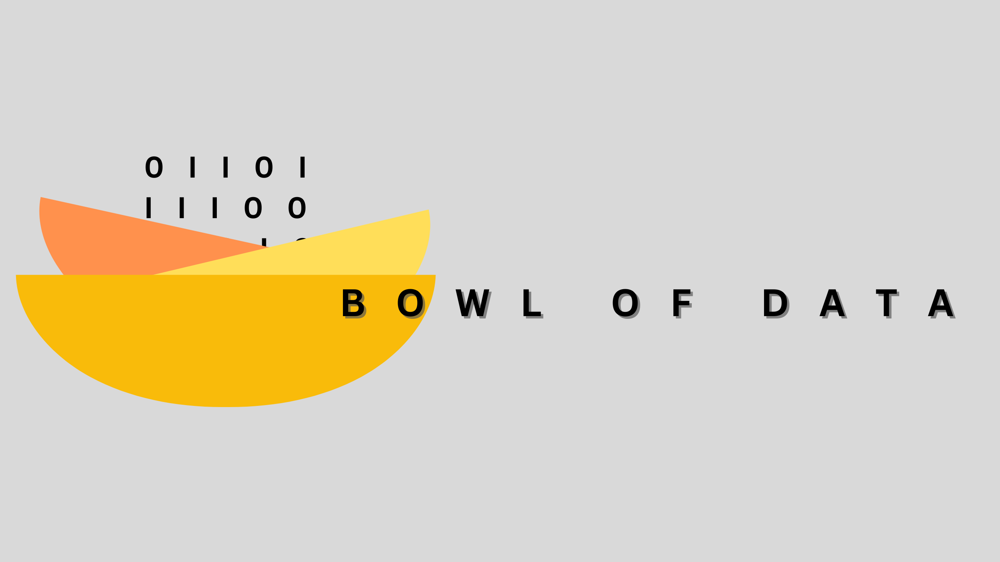

The internet is noisy.
Your tech digest isn't.
Every week, an AI‑powered pipeline combs through hundreds of sources: security advisories, model releases, blockchain moves, and engineering deep‑dives, and serves only the stories that actually matter.
What we cover
AI & Machine Learning
Model releases, research breakthroughs, and the real-world impact of large language models on products and people.
Cybersecurity
Vulnerabilities, exploits, threat intelligence, and what to patch before it becomes someone else's headline.
Blockchain & Crypto
Market moves, protocol upgrades, DeFi developments, and regulatory shifts worth paying attention to.
Software Engineering
Tools, frameworks, open-source releases, and developer ecosystem news that changes how we build things.
Latest issue
-
Postmortem: TanStack npm supply-chain compromise
An attacker successfully compromised 42 TanStack npm packages by chaining GitHub Actions cache poisoning with OIDC token extraction. The breach allowed for the unauthorized publication of malicious versions that could exfiltrate sensitive cloud and infrastructure credentials.
-
Giving Claude Code Full Control of a Hardware Fault Injection Setup to Bypass Secure Boot
Researchers demonstrated a successful hardware Fault Injection attack where an AI agent, Claude Code, was given control over hardware tools to bypass Secure Boot on an ESP32. This represents a significant milestone in the use of agentic AI for automating complex hardware exploitation workflows.
-
Hackers Used AI to Develop First Known Zero-Day 2FA Bypass for Mass Exploitation
Google has uncovered a new threat involving a zero-day 2FA bypass exploit likely created using AI-generated Python code. Additionally, the report highlights PromptSpy, an Android malware that leverages Gemini AI to perform autonomous malicious actions on mobile devices.
-
Dead.Letter (CVE-2026-45185) How XBOW found an unauthenticated RCE on Exim
Researchers have identified a critical unauthenticated remote code execution vulnerability in the Exim mail server, tracked as CVE-2026-45185. The bug stems from a use-after-free condition during TLS shutdown when GnuTLS is employed.
-
Microsoft France's legal affairs director told the French Senate, under oath, that he can't guarantee European "sovereign cloud" data stays out of US reach
The text argues that European digital sovereignty is being hollowed out by the legal reach of the US CLOUD Act and the aggressive lobbying of American hyperscalers. It details how strategic acquisitions and legislative influence are bringing essential European infrastructure under US jurisdiction.
+ 8 more articles in this issue